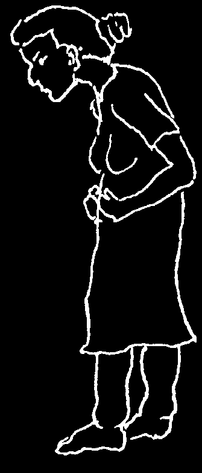
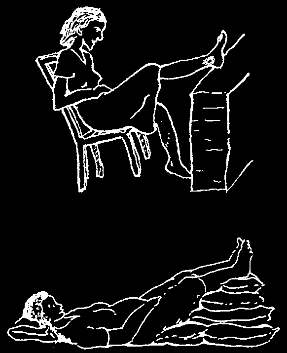
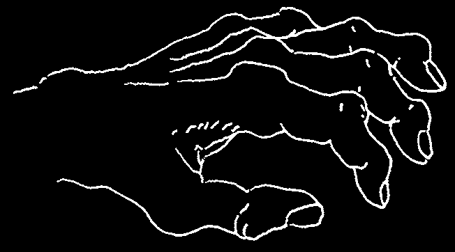
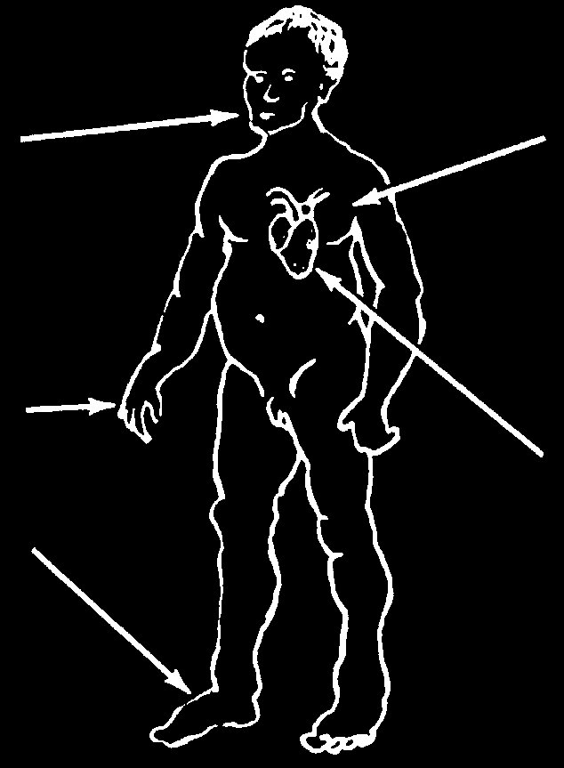
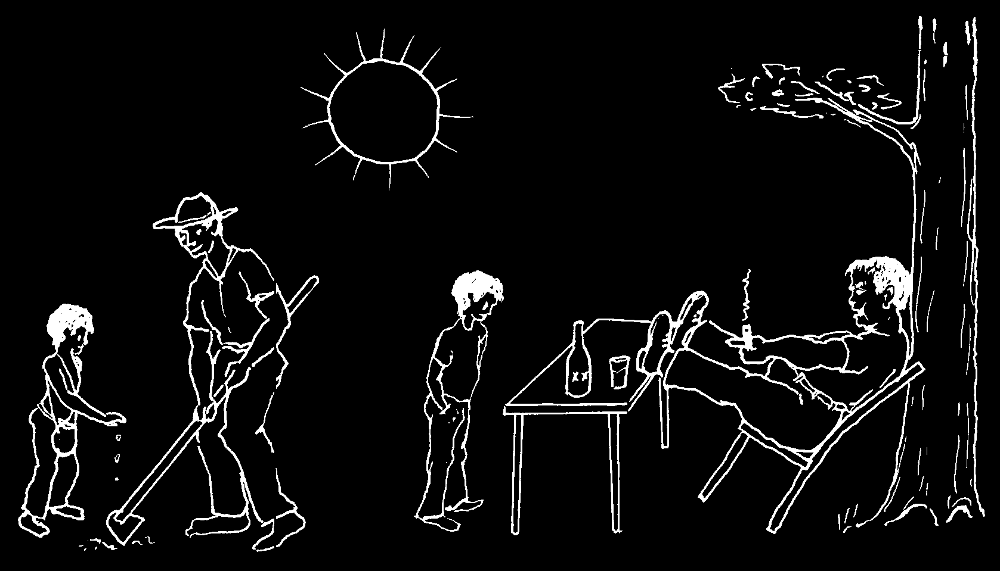
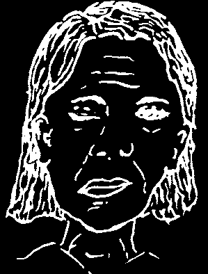
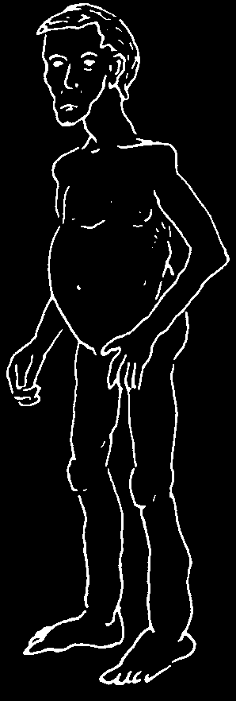
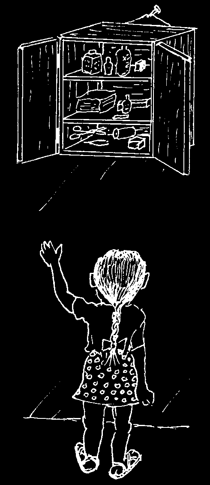
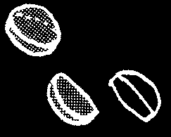

HELPING CHILDREN LEARN
As a child grows, she learns partly from what she is taught. Knowledge and skills she learns in school may help her to understand and do more later. School can be important.
But a child does much of her learning at home or in the forest or fields. She learns by watching, listening, and trying for herself what she sees others do. She learns not so much from what people tell her, as from how she sees them act.
Some of the most important things a child can learn—such as kindness, responsibility, and sharing—can be taught only by setting a good example.
A child learns through adventure. She needs to learn how to do things for herself, even though she makes mistakes. When she is very young, protect a child from danger. But as she grows, help her learn to care for herself. Give her some responsibility. Respect her judgment, even if it differs from your own.
When a child is young, she thinks mostly of filling only her own needs. Later, she discovers the deeper pleasure of helping and doing things for others.
Welcome the help of children and let them know how much it means.
Children who are not afraid ask many questions. If parents, teachers, and others take the time to answer their questions clearly and honestly—and to say they do not know when they do not—a child will keep asking questions, and as she grows may look for ways to make her surroundings or her village a better place to live.
Some of the best ideas for helping children learn and become involved in community health care have been developed through the Child-to-Child program. This is described in Helping Health Workers Learn, Chapter 24.
Or write to:
The Child-to-Child Trust
Institute of Education
20 Bedford Way
London WC1H 0AL
England
Tel: +44 (0) 207-612-6649
Fax: +44 (0) 207-612-6645
E-mail: ccenquiries@ioe.ac.uk www.child-to-child.org


CHAPTER
Health and Sicknesses of Older People
This chapter is about the prevention and treatment of problems seen mostly in older persons.
SUMMARY OF HEALTH PROBLEMS DISCUSSED IN OTHER CHAPTERS
Difficulties with Vision (see p. 217)
After the age of 40, many people have problems seeing close objects clearly. They are becoming farsighted. Often glasses will help.
Everyone over age 40 should watch for signs of glaucoma, which can cause blindness if left untreated. Any person with signs of glaucoma (see p. 222) should seek medical help.
Cataracts (see p. 225) and 'flies before the eyes’ (tiny moving spots—p. 227) are also common problems of old age.
Weakness, Tiredness, and Eating Habits
Old people understandably have less energy and strength than when they were younger, but they will become even weaker if they do not eat well. Although older people often do not eat very much, they should eat some body building and protective foods every day (see p. 110 to 111).
Swelling of the Feet (see p. 176)
This can be caused by many diseases, but in older people it is often caused by poor circulation or heart trouble (see p. 325). Whatever the cause, keeping the feet up is the best treatment. Walking helps too—but do not spend much time standing or sitting with the feet down. Keep the feet up whenever possible.



Chronic Sores of the Legs or Feet (see p. 213)
GOOD
These may result from poor circulation, often because of varicose veins (p. 175). Sometimes diabetes is part of the cause (p. 127). For other possibilities, see page 20.
Sores that result from poor circulation heal very slowly.
Keep the sore as clean as possible. Wash it with boiled water and mild soap and change the bandage often. If signs of infection develop, treat as
BETTER
directed on p. 88.
When sitting or sleeping, keep the foot up.
Difficulty Urinating (see p. 235)
Older men who have difficulty urinating or whose urine drips or dribbles are probably suffering from an enlarged prostate gland. Turn to page 235.
Chronic Cough (see p. 168)
Older people who cough a lot should not smoke and should seek medical advice. If they had symptoms of tuberculosis when they were younger, or have ever coughed up blood, they may have tuberculosis.
If an older person develops a cough with wheezing or trouble breathing (asthma) or if his feet also swell, he may have heart trouble (see the next page).
Rheumatoid Arthritis (painful joints) (see p. 173)
Many older people have arthritis.
To help arthritis:
♦ Rest the joints that hurt.
♦ Apply hot compresses (see p. 195).
♦ Take a medicine for pain; aspirin is best.
For severe arthritis, take 2 to 3 aspirin tablets up to 6 times a day with bicarbonate of soda, an antacid (see p. 380), milk, or a lot of water. (If the ears begin to ring, take less.)
♦ It is important to do exercises that help maintain as much movement as possible in the painful joints.


OTHER IMPORTANT ILLNESSES OF OLD AGE
Heart Trouble
Heart disease is more frequent in older people, especially in those who are fat, who smoke, or who have high blood pressure. Men and women share many of the same signs below, but women more often have unexplained tiredness, sleeping problems, and shortness of breath. Women also feel an ache or tightness in the chest more than the sharper pains felt by men.
• Shortness of breath
Signs of heart problems:
without exercise, unexplained tiredness, weakness, dizziness.
• Anxiety and difficulty in breathing after
• Sudden, painful attacks exercise; asthma-like in the chest, left shoulder, attacks that get worse or arm that occur when when the person lies exercising and go away down (cardiac asthma).
after resting for a few minutes (angina pectoris).
• A rapid, weak, or irregular pulse.
• A sharp pain like a great
• Swelling of the feet— weight crushing the chest;
worse in the afternoons.
does not go away with rest (heart attack).
• In women, a feeling like indigestion, nausea, clamminess, spasms, jaw pain (heart attack).
Treatment:
♦ Different heart diseases may require different specific medicines, which must be used with great care. If you think a person has heart trouble, seek medical help. It is important that he have the right medicine when he needs it.
♦ People with heart trouble should not work so hard they get chest pain or have trouble breathing. However, regular exercise helps prevent heart attacks.
♦ Persons with heart problems should not eat greasy food and should lose weight if they are overweight. Also, they should not smoke or drink alcohol.
♦ If an older person begins having attacks of difficult breathing or swelling of the feet, he should eat food that contains little or no salt for the rest of his life.
♦ Also, taking 1/2 aspirin tablet a day may help prevent a heart attack or a stroke.
♦ If a person has angina pectoris or heart attack, she should rest very quietly in a cool place until the pain goes away.
If the chest pain is very strong and does not go away with rest, or if the person shows signs of shock (see p. 77), the heart has probably been severely damaged. The person should stay in bed for at least a week or as long as she is in pain or shock. Then she can begin to sit up or move slowly, but should stay very quiet for amonth or more. Consider getting medical help.
Prevention: See the next page.

Words to Younger Persons
Who Want to Stay Healthy When They Are Older
Many of the health problems of middle and old age, including high blood pressure, hardening of the arteries, heart disease, and stroke, result from the way a person has lived and what he ate, drank, and smoked when younger. Your chances for living and staying healthy longer are greater if you:
1. Eat well—enough nutritious foods, but not too much rich, greasy, or salty food.
Avoid getting overweight. Use vegetable oil rather than animal fat for cooking.
2. Do not drink a lot of alcoholic drinks.
3. Do not smoke.
4. Keep physically and mentally active.
5. Try to get enough rest and sleep.
6. Learn how to relax and deal positively with things that worry or upset you.
High blood pressure (p. 125) and hardening of the arteries (arteriosclerosis), which are the main causes of heart disease and stroke, can usually be prevented— or reduced—by doing the things recommended above. The lowering of high blood pressure is important in the prevention of heart disease and stroke. Persons who have high blood pressure should have it checked from time to time and take measures to lower it. For those who are not successful in lowering their blood pressure by eating less (if they are overweight), giving up smoking, getting more exercise, and learning to relax, taking medicines to lower blood pressure (antihypertensives) may help.
Which of these two men is likely to live longer and be healthy in his old age?
Which is more likely to die of a heart attack or a stroke? Why? How many reasons can you count?


Stroke (Apoplexy, Cerebro-Vascular Accident, CVA)
In older people stroke or cerebro-vascular accident (CVA) commonly results from a blood clot or from bleeding inside the brain. The word stroke is used because this condition often strikes without warning. The person may suddenly fall down, unconscious. Her face is often reddish, her breathing hoarse and noisy, her pulse strong and slow. She may remain in a coma
(unconscious) for hours or days.
If she lives, she may have trouble speaking, seeing, or thinking, or one side of her face and body may be paralyzed.
In minor strokes, some of these same problems may result without loss of consciousness. The difficulties caused by stroke sometimes get better with time.
Treatment:
Put the person in bed with her head a little higher than her feet. If she is unconscious, roll her head back and to one side so her saliva (or vomit) runs out of her mouth, rather than into her lungs. While she is unconscious, give no food, drink, or medicines by mouth (see the Unconscious Person, p. 78). If possible, seek medical help.
After the stroke, if the person remains partly paralyzed, help her to walk with a cane and to use her good hand to care for herself. She should avoid heavy exercise and anger.
Prevention: See the page before this one.
Note: If a younger or middle aged person suddenly develops paralysis on one side of his face, with no other signs of stroke, this is probably a temporary paralysis of the face nerve (Bell’s Palsy). It will usually go away by itself in a few weeks or months. The cause is usually not known. No treatment is needed but hot soaks may help. If one eye does not close all the way, bandage it shut at night to prevent damage from dryness.
Deafness
Deafness that comes on gradually without pain or other symptoms occurs most often in men over 40. It is usually incurable, though a hearing aid may help. Sometimes deafness results from ear infections (see p. 309), a head injury, or a plug of dry wax. For information on how to remove ear wax, see p. 405.
DEAFNESS WITH RINGING OF THE EARS AND DIZZINESS
If an older person loses hearing in one or both ears—occasionally with severe dizziness—and hears a loud 'ringing’ or buzzing, he probably has Ménière’s disease. He may also feel nauseous, or vomit, and may sweat a lot. He should take an antihistamine, such as dimenhydrinate (Dramamine, p. 386) and go to bed until the signs go away. He should have no salt in his food. If he does not get better soon, or if the problem returns, he should seek medical advice.

Loss of Sleep (Insomnia)
It is normal for older people to need less sleep than younger people. And they wake up more often at night. During long winter nights, older people may spend hours without being able to sleep.
Certain medicines may help bring sleep, but it is better not to use them if they are not absolutely necessary.
Here are some suggestions for sleeping:
♦ Get plenty of exercise during the day.
♦ Do not drink coffee or black tea, especially in the afternoon or evening.
♦ Drink a glass of warm milk or milk with honey before going to bed.
♦ Take a warm bath before going to bed.
♦ In bed, try to relax each part of your body—then your whole body and mind.
remember good times.
♦ If you still cannot sleep, try taking an antihistamine like promethazine (Phenergan, p. 385) or dimenhydrinate (Dramamine, p. 386) half an hour before going to bed.
These are less habit-forming than stronger drugs.
DISEASES FOUND MORE OFTEN IN PEOPLE OVER 40 YEARS OLD
Cirrhosis of the Liver
Cirrhosis usually occurs in men over 40 who for years have been drinking a lot of liquor (alcohol) and eating poorly.
Signs:
• Cirrhosis starts like hepatitis, with weakness, loss of appetite, upset stomach, and pain on the person’s right side below the ribs.
• As the illness gets worse, the person gets thinner and thinner.
He may vomit blood. In serious cases the feet swell, and the belly swells with liquid until it looks like a drum. The eyes and skin may turn yellowish (jaundice).
Treatment:
When cirrhosis is severe, it is hard to cure. There are no medicines that help much.
Most people with severe cirrhosis die from it. If you want to stay alive, at the first sign of cirrhosis do the following:
♦ Never drink alcohol again! Alcohol poisons the liver.
♦ Eat as well as possible: vegetables, fruit, and some protein (p. 110 and 111).
But do not eat a lot of protein (meat, eggs, fish, etc.) because this makes the damaged liver work too hard.
♦ If a person with cirrhosis has swelling, he should not use any salt in his food.
Prevention of this disease is easy: DO NOT DRINK SO MUCH ALCOHOL.

Gallbladder Problems
The gallbladder is a small sac attached to the liver. It collects a bitter, green juice called bile, which helps digest fatty foods.
Gallbladder disease occurs most commonly in women over 40, people who are overweight, and people with diabetes.
Signs:
• Sharp pain in the stomach at the edge of the right rib cage:
This pain sometimes reaches up to the right side of the upper back.
• The pain may come an hour or more after eating rich or fatty foods. Severe pain may cause vomiting.
• Belching or burping with a bad taste.
• In severe cases, there may be fever.
• Occasionally the eyes may become yellow (jaundice).
Treatment:
♦ Do not eat greasy food. Overweight (fat) people should eat small meals and lose weight.
♦ Take ibuprofen to calm the pain (see p. 379). Stronger painkillers are often needed. (Aspirin will probably not help.)
♦ If the person has a fever, she should take ampicillin (p. 352).
♦ In severe or chronic cases, seek medical help. Sometimes surgery is needed.
Prevention:
Women (and men) who are overweight should try to lose weight (see p. 126).
Avoid rich, sweet, and greasy food, do not eat too much, and get some exercise.
BILIOUSNESS
In many countries and in different languages, bad-tempered persons are said to be 'bilious’. Some people believe that fits of anger come when a person has too much bile.
In truth, most-bad tempered persons have nothing wrong with their gallbladders or bile. However, persons who do suffer from gallbladder disease often live in fear of a return of this severe pain and perhaps for this reason are sometimes short-tempered or continually worried about their health. (In fact, the term
'hypochondria’, which means to worry continually about one’s own health, comes from 'hypo’, meaning under, and 'chondrium’, meaning rib—referring to the position of the gallbladder!)
ACCEPTING DEATH
Old people are often more ready to accept their own approaching death than are those who love them. Persons who have lived fully are not usually afraid to die. Death is, after all, the natural end of life.
We often make the mistake of trying to keep a dying person alive as long as possible, no matter what the cost. Sometimes this adds to the suffering and strain for both the person and his family. There are many occasions when the kindest thing to do is not to hunt for 'better medicine’ or a 'better doctor’ but to be close to and supporting of the person who is dying. Let him know that you are glad for all the time, the joy and the sorrow you have shared, and that you, too, are able to accept his death. In the last hours, love and acceptance will do far more good than medicines.
Old or chronically ill persons would often prefer to be at home, in familiar surroundings with those they love, than to be in a hospital. At times this may mean that the person will die earlier. But this is not necessarily bad. We must be sensitive to the person’s feelings and needs, and to our own. Sometimes a person who is dying suffers more knowing that the cost of keeping him barely alive causes his family to go into debt or children to go hungry. He may ask simply to be allowed to die and—and there are times when this may be the wise decision.
Yet some people fear death. Even if they are suffering, the known world may be hard to leave behind. Every culture has a system of beliefs about death and ideas about life after death. These ideas, beliefs, and traditions may offer some comfort in facing death.
Death may come upon a person suddenly and unexpectedly or may be long-awaited. How to help someone we love accept and prepare for his approaching death is not an easy matter. Often the most we can do is offer support, kindness, and understanding.
The death of a younger person or child is never easy. Both kindness and honesty are important. A child—or anyone—who is dying often knows it, partly by what her own body tells her and partly by the fear or despair she sees in those who love her. Whether young or old, if a person who is dying asks for the truth, tell her, but tell her gently, and leave some room for hope. Weep if you must, but let her know that even as you love her, and because you love her, you have the strength to let her leave you. This will give her the strength and courage to accept leaving you. To let her know these things you need not say them. You need to feel and show them.
We must all die. Perhaps the most important job of the healer is to help people accept death when it can or should no longer be avoided, and to help ease the suffering of those who still live.

CHAPTER
The Medicine Kit
Every family and every village should have certain medical supplies ready in case of emergency:
• The family should have a HOME MEDICINE KIT (see p. 334) with the necessary medicines for first aid, simple infections, and the most common health problems.
• The village should have a more complete medical kit (see VILLAGE MEDICINE
KIT, p. 336) with supplies necessary to care for day-to-day problems as well as to meet a serious illness or an emergency. A responsible person should be in charge of it—a health worker, teacher, parent, storekeeper, or anyone who can be trusted by the community. If possible, all members of the village should take part in setting up and paying for the medical kit. Those who can afford more should contribute more. But everyone should understand that the medicine kit is for the benefit of all—those who can pay and those who cannot.
On the following pages you will find suggestions for what the medicine kits might contain. You will want to change these lists to best meet the needs and resources in your area. Although the list includes mostly modern medicines, important home remedies known to be safe and to work well can also be included.
How much of each medicine should you have?
The amounts of medicines recommended for the medicine kits are the smallest amounts that should be kept on hand. In some cases there will be just enough to begin treatment. It may be necessary to take the sick person to a hospital or go for more medicine at once.
The amount of medicine you keep in your kit will depend on how many people it is intended to serve and how far you have to go to get more when some are used up. It will also depend on cost and how much the family or village can afford. Some of the medicines for your kit will be expensive, but it is wise to have enough of the important medicines on hand to meet emergencies.
Note: Supplies for birth kits—the things midwives and pregnant mothers need to have ready for a birth—are listed on pages 254 to 255.

HOW TO CARE FOR YOUR MEDICINE KIT
1. CAUTION: Keep all medicines out of the reach of children. Any medicine taken in large doses can be poisonous.
2. Be sure that all medicine is well labeled and that directions for use are kept with each medicine. Keep a copy of this book with the medicine kit.
3. Keep all medicines and medical supplies together in a clean, dry, cool place free from cockroaches and rats. Protect instruments, gauze, and cotton by wrapping them in sealed plastic bags.
4. Keep an emergency supply of important medicines on hand at all times. Each time one is used, replace it as soon as possible.
5. Notice the DATE OF EXPIRATION on each medicine. If the date has passed or the medicine looks spoiled, destroy it and get new medicine.
Note: Some medicines, especially tetracyclines, may be very dangerous if they have passed their expiration date. However, penicillins in dry form (tablets or powder for syrup or injection) can be used for as long as a year after the expiration date if they have been stored in a clean, dry, and fairly cool place. Old penicillin may lose some of its strength so you may want to increase the dose. (CAUTION: While this is safe with penicillin, with other medicines it is often too dangerous to give more than the recommended dose.)
Keep medicines out of reach of children.

BUYING SUPPLIES FOR THE MEDICINE KIT
Most of the medicines recommended in this book can be bought in the pharmacies of larger towns. If several families or the village got together to buy what they need at once, often the pharmacist may sell them supplies at lower cost. Or if medicines and supplies can be bought from a wholesaler, prices will be cheaper still.
If the pharmacy does not supply a brand of medicine you want, buy another brand, but be sure that it is the same medicine and check the dosage.
When buying medicines, compare prices. Some brands are much more expensive than others even though the medicine is the same. More expensive medicines are usually no better. When possible, buy generic medicines rather than brand-name products, as the generic ones are often much cheaper.
Sometimes you can save money by buying larger quantities. For example, a
600,000-Unit vial of penicillin often costs only a little more than a 300,000-Unit vial— so buy the large vial and use it for two doses.
BE PREPARED FOR
EMERGENCIES:
KEEP YOUR MEDICINE
KIT WELL-SUPPLIED!
THE HOME MEDICINE KIT
Each family should have the following things in their medicine kit. These supplies should be enough to treat many common problems in rural areas.
Also include useful home remedies in your medicine kit.
SUPPLIES
Supply
Price
Amount
See
(write in)
recommended page
FOR WOUNDS AND SKIN PROBLEMS:
plastic or rubber gloves or plastic bags for your hands
1 small package sterile gauze pads in individual sealed envelopes
97, 218
1-, 2-, and 3-inch gauze bandage rolls
2 each clean cotton
1 small
14, 72, package
83, 254 adhesive tape (adhesive plaster),
1-inch wide roll
2 rolls soap—if possible a
1 bar or disinfectant soap like Betadine small bottle
70% alcohol
¼ liter
72, 201,
211, 254 hydrogen peroxide,
1 small in a dark bottle bottle
183, 213 petroleum jelly (Vaseline)
91, 97, in a jar or tube
141, 199 white vinegar
½ liter
241, 294 sulfur
100 g.
205, 206, scissors
1 pair
85, 254,
(clean, not rusty)
tweezers with pointed ends
1 pair
84, 175
FOR MEASURING TEMPERATURE:
thermometers:
for mouth for rectum
1 each
30, 41
FOR KEEPING SUPPLIES CLEAN:
plastic bags several
195, 332
MEDICINES
Medicine
Local brand
Price
Amount
See
(generic name)
(write in)
(write in) recommended page
FOR BACTERIAL INFECTIONS:
1. Penicillin,
250 mg. tablets
2. Cotrimoxazole
(sulfamethoxazole,
400 mg., with trimethoprim, 80 mg.)
3. Ampicillin,
250 mg. capsules
FOR WORMS:
4. Mebendazole
40 tablets tablets of 100 mg.
or 2 bottles
FOR FEVER AND PAIN:
5. Aspirin, 300 mg.
(5 grain) tablets
6. Acetaminophen,
500 mg. tablets
FOR ANEMIA:
7. Iron (ferrous sulfate),
200 mg, pills (best if pills also contain vitamin C and folic acid)
FOR SCABIES AND LICE:
8. Permethrin
1 bottle of shampoo
1 tube of cream
FOR ITCHING AND VOMITING:
9. Promethazine,
25 mg. tablets
FOR MILD SKIN INFECTIONS:
10. Gentian violet, small bottle; or an
1 bottle antibiotic ointment
1 tube
FOR EYE INFECTIONS:
11. Antibiotic eye ointment
1 tube
THE VILLAGE MEDICINE KIT
This should have all the medicines and supplies mentioned in the Home Medicine
Kit, but in larger amounts, depending on the size of your village and distance from a supply center. The Village Kit should also include the things listed here; many of them are for treatment of more dangerous illnesses. You will have to change or add to the list depending on the diseases in your area.
ADDITIONAL SUPPLIES
Supply
Price
Amount
Page
FOR INJECTING:
syringes, 5 ml.
needles # 22, 3 cm long
3–6
# 25, 1 1/2 cm long
2–4
FOR TROUBLE URINATING:
catheter (rubber or plastic # 16 French)
FOR SPRAINS AND SWOLLEN VEINS:
elastic bandages,
102,175
2 and 3 inches wide
3–6
FOR LOOKING IN EARS, ETC:
penlight (small flashlight)
34, 255
ADDITIONAL MEDICINES
Medicine
Local brand
Price
Amount Page
FOR SEVERE INFECTIONS:
1. Penicillin, injectable;
if only one, procaine penicillin 600,000 U. per ml.
20–40 351
2. Ampicillin, injectable
250 mg. ampules
20–40 352 and/or streptomycin
1 g. vials for combined use with penicillin (if ampicillin is too expensive)
20–40 353
3. Tetracycline, capsules or tablets 250 mg.
40–80 356
FOR AMEBA AND GIARDIA INFECTIONS:
4. Metronidazole, 250 mg. tablets
40–80 368
FOR SEIZURES:
5. Phenobarbital, 15 mg. tablets
40–80 389
Medicine
Local brand
Price
Amount Page
FOR SEVERE ALLERGIC REACTIONS AND SEVERE ASTHMA:
6. Epinephrine (Adrenalin)
injections, ampules with 1 mg.
5–10
FOR ASTHMA:
7. Salbutamol, rescue inhaler
FOR SEVERE BLEEDING AFTER CHILDBIRTH:
8. Oxytocin for injection, 10 Units/ml.
6-12 or Misoprostol tablets of 200 mcg.
18–36
OTHER MEDICINES NEEDED IN MANY BUT NOT ALL AREAS
WHERE DRY EYES (XEROPHTHALMIA) IS A PROBLEM:
Vitamin A, 200,000 U. capsules
10–100
WHERE TETANUS IS A PROBLEM:
Tetanus antitoxin, 50,000 units
2–4
(Lyophilized if possible)
bottles
WHERE SNAKEBITE OR SCORPION STING IS A PROBLEM:
Specific antivenom
2–6
WHERE MALARIA IS A PROBLEM:
Artemisin-based combination therapy, or whatever medicines
50–200 are recommended in your area.
TO PREVENT OR TREAT BLEEDING IN UNDERWEIGHT NEWBORNS:
Vitamin K, injections of 1 mg.
3–6
MEDICINES FOR CHRONIC DISEASES
It may or may not be wise to have medicines for chronic diseases such as tuberculosis, leprosy, and schistosomiasis in the Village Medicine Kit. To be sure a person has one of these diseases, often special tests must be made in a health center, where the necessary medicine can usually be obtained. Whether these and other medicines are included in the village medical supplies will depend on the local situation and the medical ability of those responsible.
VACCINES
Vaccines have not been included in the Village Medicine Kit because they are usually provided by the Health Department. However, a great effort should be made to see that all children are vaccinated as soon as they are old enough for the different vaccines (see p. 147). Therefore, if refrigeration is available, vaccines should be part of the village medical supplies—especially the DPT, polio, tuberculosis, and measles vaccines.

WORDS TO THE VILLAGE STOREKEEPER OR PHARMACIST
If you sell medicines in your store, people probably ask you about which medicines to buy and when or how to use them. You are in a position to have an important effect on people’s knowledge and health.
This book can help you to give correct advice and to see that your customers buy only those medicines they really need.
As you know, people too often spend the little money they have for medicines that do not help them. But you can help them understand their health needs more clearly and spend their money more wisely. For example:
• If people come asking for cough syrups, for a diarrhea thickener like Kaopectate, for vitamin B12 or liver extract to treat simple anemia, for penicillin to treat a sprain or ache, or for tetracycline when they have a cold, explain to them that these medicines are not needed and may do more harm than good. Discuss with them what to do instead.
• If someone wants to buy a vitamin tonic, encourage him to buy eggs, fruit, or vegetables instead. Help him understand that these have more vitamins and nutritional value for the money.
• If people ask for an injection when medicine by mouth would work as well and be safer—which is usually the case—tell them so.
• If someone wants to buy 'cold tablets’ or some other expensive combination of medicines for a cold, encourage him to save money by buying plain aspirin, acetaminophen, or ibuprofen tablets and taking them with lots of liquids.
You may find it easier to tell people these things if you look up the information in this book, and read it together with them.
Above all, sell only useful medicines. Stock your store with the medicines and supplies listed for the Home and Village Medicine Kits, as well as other medicines and supplies that are important for common illnesses in your area. Try to stock low cost generic products or the least expensive brands. And never sell medicines that are expired, damaged, or useless.
Your store can become a place where people learn about caring for their own health. If you can help people use medicines intelligently, making sure that anyone who purchases a medicine is well informed as to its correct use and dosage, as well as the risks and precautions, you will provide an outstanding service to your community. Good luck!


GREEN PAGES Where There Is No Doctor 2013
The Green Pages
THE USES, DOSAGE, AND PRECAUTIONS FOR
THE MEDICINES REFERRED TO IN THIS BOOK
The medicines in this section are grouped according to their uses. For example, all the medicines used to treat infections caused by worms are listed under the heading FOR WORMS.
If you want information on a medicine, look for the name of that medicine in the LIST OF MEDICINES beginning on page 341. Or look for the medicine in the
INDEX OF MEDICINES beginning on page 345. When you find the name you are looking for, turn to the page number shown.
Medicines are listed according to their generic (scientific) names rather than their brand names (names given by the companies that make them). This is because generic names are similar everywhere, but brand names differ from place to place. Also, medicines are often much cheaper when you buy generic rather than brand-name products.
In a few cases, well-known brand names are given after the generic name.
In this book brand names are written in italics and begin with a capital letter. For example, Phenergan is a brand name for an antihistamine called promethazine
(promethazine is the generic name).
With the information on each medicine, blank spaces _____________ have been left for you to write in the name and price of the most common or least expensive product in your area. For example, if the cheapest or only available form of tetracycline in your area is Terramycin, you would write in the blank spaces as follows:
Tetracycline (tetracycline HCI, oxytetracycline, etc.)
Name: ________________________________________ price: _______ for ______________________________________________
If, however, you find you can buy generic tetracycline more cheaply than
Terramycin, write instead:
Name: ________________________________________ price: _______ for ______________________________________________
Note: Not all the medicines listed in the Green Pages are needed in your Home or Village Medicine kit. Because different medicines are available in different countries, information has sometimes been given for a number of medicines that do the same job. However, it is wise to
KEEP AND USE ONLY A SMALL NUMBER OF MEDICINES.



GREEN PAGES
Dosage Information:
HOW FRACTIONS ARE SOMETIMES WRITTEN
1 tablet
= one tablet =
½ tablet
= half a tablet =
1 ½ tablets = one and a half tablets =
¼ tablet
= one quarter or one fourth of a tablet =
1⁄8 tablet
= one eighth of a tablet (dividing it into 8 equal pieces and taking 1 piece) =
DECIDING DOSAGE BY HOW MUCH A PERSON WEIGHS
In these pages most instructions for dosage are given according to the age of a person—so that children get smaller doses than adults. However, it is more exact to determine dosage according to a person’s weight. Information for doing this is sometimes included briefly in parentheses (), for use of health workers who have scales. If you read...
(100 mg./kg./day), this means 100 mg. per kilogram of body weight per day. In other words, during a
24 hour period you give 100 mg. of the medicine for each kilogram the person weighs.
For example, suppose you want to give aspirin to a boy with rheumatic fever who weighs 36 kilograms. The recommended dose of aspirin for rheumatic fever is
100 mg./kg./day. So multiply:
100 mg. x 36 = 3600 mg.
The boy should get 3600 mg. of aspirin a day. One aspirin tablet contains 300 mg. of aspirin, 3600 mg. comes to 12 tablets. So give the boy 2 tablets 6 times a day
(or 2 tablets every 4 hours).
This is one way to figure the dosages for different medicines. For more information on measuring and deciding on dosages, see Chapter 8.
Note to educators and planners of health care programs and to local distributors of this book:
If this book is to be used in training programs for village health workers or is distributed by a local health care program, information about local names and prices of medicines should accompany the book.
Local distributors are encouraged to duplicate a sheet with this information, so that it can be copied into the book by the user. Wherever possible, include local sources for generic or low-cost medicines and supplies. (See “Buying Supplies for the Medicine Kit,” page 333.)
GREEN PAGES Where There Is No Doctor 2013